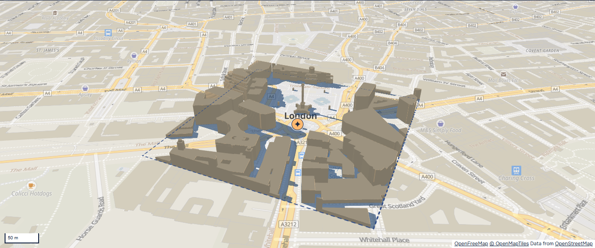
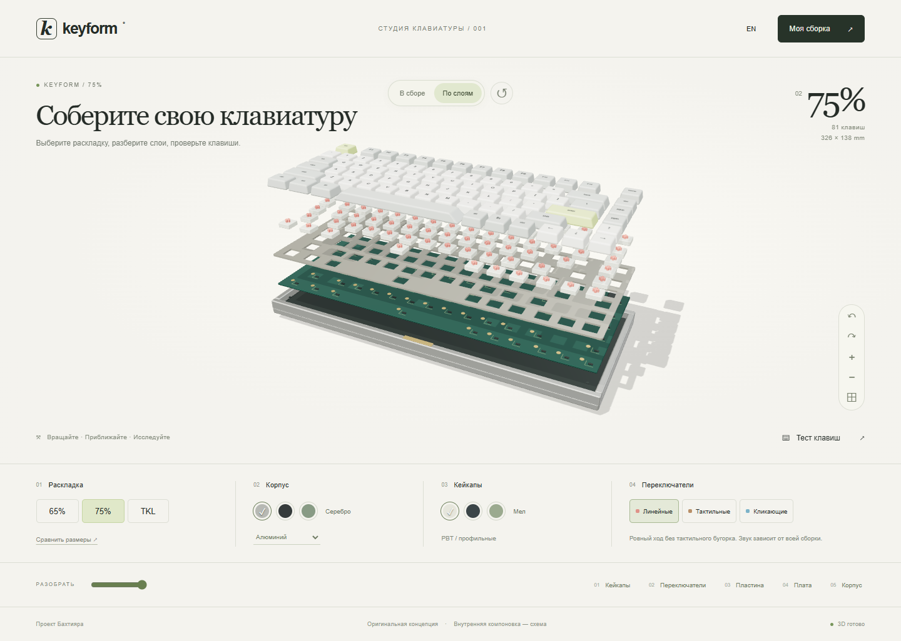
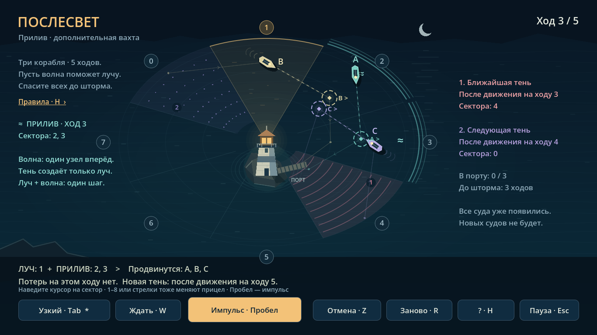

Работы.


Подробности
Браузерная версия и сборка для Windows.
Ещё 6 проектов
Подробности
Исходник отдельно от правок, undo/redo и явный выбор для дубликатов. Разбор и проверки — в Web Worker.
Попробовать мини-пример
Данные → правка → результатК кейсу
Rowline
Мини-примерТри искусственные строки. Уберите пробелы в SKU — ведущие нули сохранятся. Строка без SKU останется ошибкой.
| SKU | stock | Проверка |
|---|---|---|
·00124· | 12 | Пробелы по краям |
00125 | 8 | Готово |
| Пусто | 6 | Нужен SKU |
· обозначает пробел в исходном значении.
Правку можно отменить. Экспорт содержит две строки с заполненным SKU.
Подробности
Прогулка по университетскому кампусу.
NeuralBrief
От интервью клиента к техническому заданию.
Подробности
Разбор процесса по описанию владельца. Публичное демо не заявлено.
Подробности
Разбор открытых Django-моделей: авторы, категории, изображения и лайки.
В работе.
IQadam Systems
Frontend · тестирование
Astana Digital Outsource
React · REST API
Опыт и образование
Колледж Astana IT University — выпуск 2026. AIU — IT, с 2026.
Резюме · PDF ↓Интерактивная схема
Интерактив / устройство приложенияАвторская схема устройства приложения
2D-схема · текст доступен ниже
Компоненты, состояние и действия человека. Здесь начинается запрос.
Пример пути запроса, без подключения к серверу.
Связь